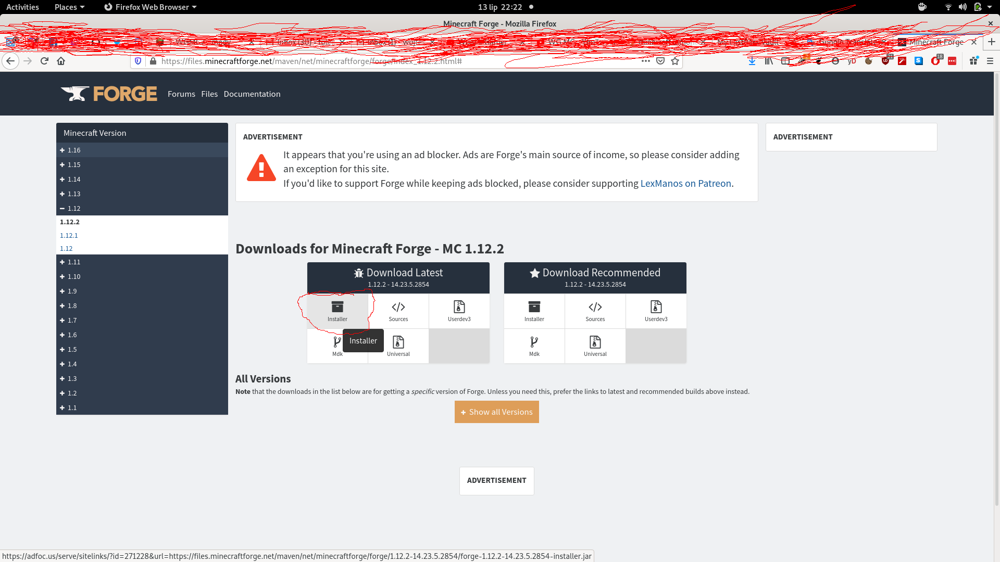
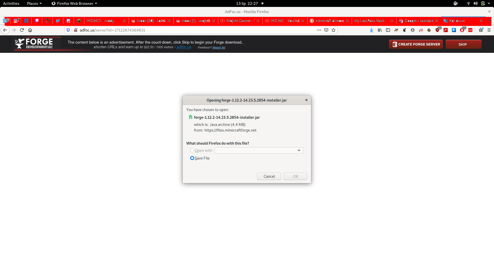
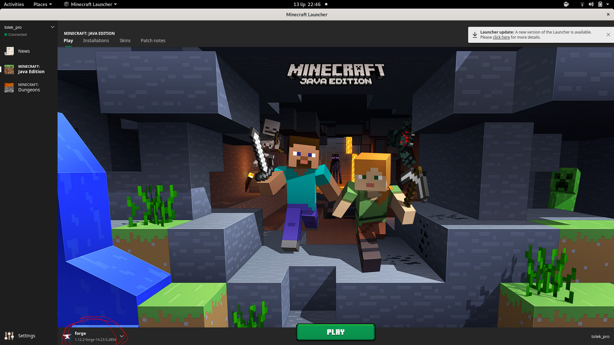
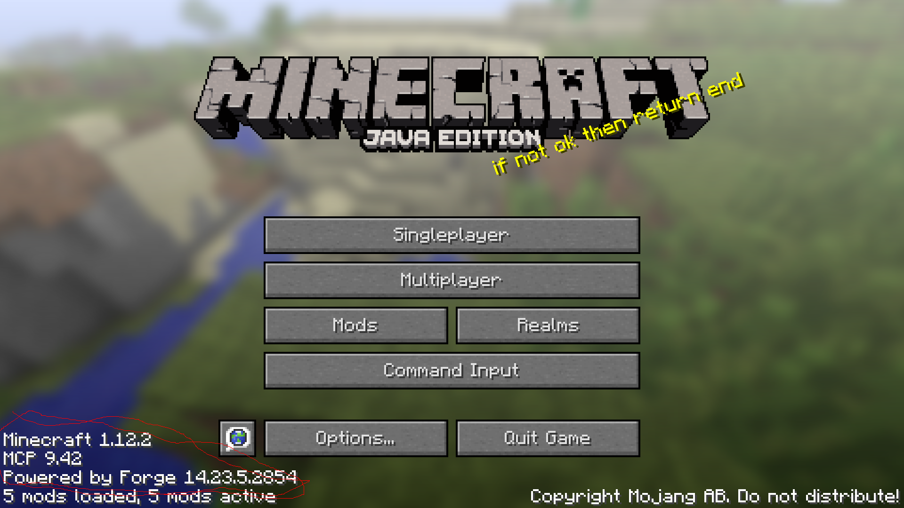
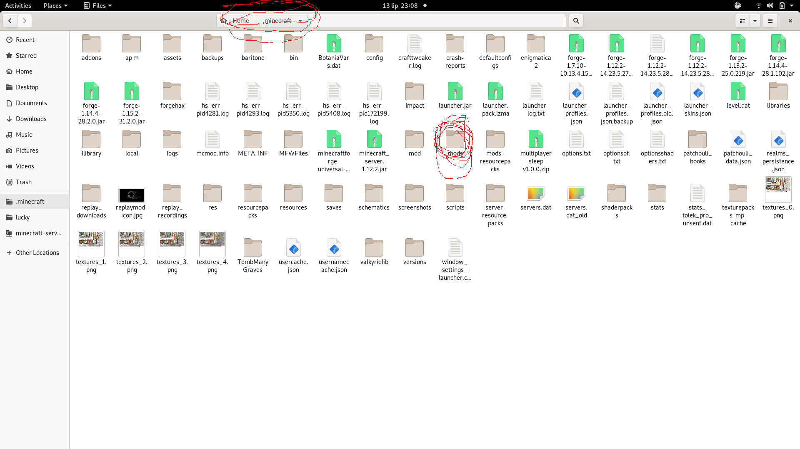

Najpierw potrzebujecie javy 8. Ściągacie sobie minecraft forge z tej strony: minecraft forge i ściągnij forge na wersje 1.12.2 installer .
Jak już naciśniesz "installer" zabierze was do takiej strony: 
odpal minecraft 1.12.2 forge 
jak już minecraft wam się odpali możecie go już zamknąć .
wejdzcie do plików do folderu .minecraft i znajdźcie folder z nazwą "mods" ale jeśli nie macie takiego folderu, to poprostu go stwórzcie .
Teraz jak już macie forgea musicie wejść na tę strone: Tu pobierzesz wszytkie mody!.
i wsadź te wszystkie mody do folderu mods w .minecraft
odpal minecraft i graj na serverze WGMC - 3!